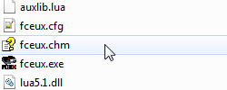

Содержание
Для получения информации по другим настройкам и возможностям эмулятора обратись к онлайн справке.
Офлайн версия этой справки находится в файле fceux.chm в корневой папке эмулятора.

Обе версии справки на английском языке. Материал в них немного устаревший, но это не отменяет его ценности.